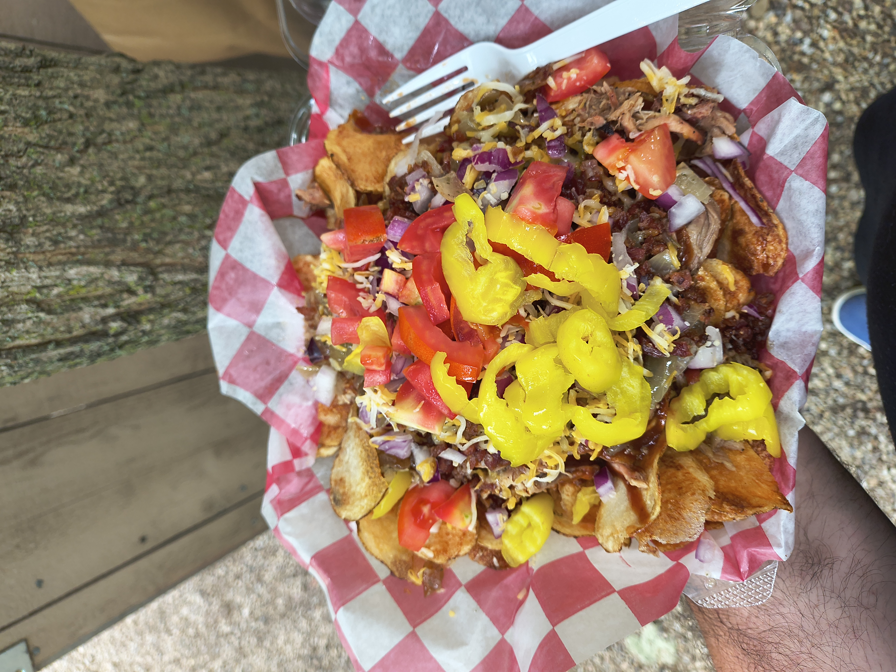

Captains Log :
2026/08/15
Shaker Festival
The wife was pumped up for this weekend as she decided we were going to go to a shaker festival in Ohio. The way she described it to me was similar to a renaissance festival, but to the 1700/1800 time period. It was not that...
Don't get me wrong, we had a great time, but I was expecting people to be dressed like it was the time of Benjamin Franklin or Goerge Washington. I saw one person, who ran a shop, dressed up like a union soldier, but he was the exception.
What it really turned out to be was an outdoor craft festival. Which is fine and I really enjoyed that too, but oh man the people! There were soo many people! Katie read online before we went that the gates open at 10 so you're better getting there before that and eating an early lunch. I thought that was just kind of broad and helpful advice, but they have to have a shuttle to get people from the farthest reaches of the parking lot to the gate if you arrive after 10.
We did purchase some cool things and there are definitely some great deals to be had. I purchased a custom hat, it's a cowboy style hat, that fits my head nice. I have one I wear for yardwork, but it get sweaty as I use it for heavy lifting yard work. I'm pretty excited about it. We also purchased a few hand crafted things as halloween decorations. We also bought a few packs of mixes for chips/pretzels. They're amazing tasting!
When we go to things like this I'm always a little leery of the food they have at the site. Not the stuff vendors are selling, like apple butter, drips, etc, but the vendors actually makeing a meal for lunch/dinner. It's not always clear whether it's going to be bad, or amazing. There never seems to be an inbetween it's one extreme or the other! The food I had, was amazing. There was a vendor there, they made BBQ. They also made home-made on site kettle chips, they cut the potato and fried the chips right there. Mine came with pulled pork on top with BBQ sauce, cheese, tomatoes, banana peppers, grilled onions, and red onions. I might like onions. I would get it again though, it was delicious.





Nap Time!
We were at the festival until nearly 1 pm. The crowds started getting real thick and the lines for the food are incredibly long. I waited 30 minutes for my chips and the large number of people really wears on me. I try to keep calm and patient, but it just wears me out.
I condiser myself to be sociable and I can talk to anyone. Unfortunately when you get a large number of people in a situation like this it's almost like common sense and decency go out the window. It's almost like everyone thinks they are the only people that exist in the world and act surprised when you take up the same space as them!
As a result, when we got home both Katie and I were ready for a nap. Kids never seem to want to take a nap. I remember never wanting do that myself as a child, but I have to say as an adult, I love naps! I don't know what it is about sleeping in the middle of the day, but it seems so easy to do, vs at night when you know you should go to sleep or the consequences are more severe.
As an adult you have 2 choices when taking a mid day nap.
- Nap on the couch - Convenient and also starts out feeling really comfortable and easy, but this is only for a quick power nap.
- Commit and go bac to bed. This is the ultimate decision. Not only are you saying I want more than a "power" nap. I want a serious sleep, but also saying, I might just sleep on through to the next day!
We chose option 2 and took a serious nap. We didn't sleep through the remainder of the day, but we did sleep hard for a few hours. I woke up feeling great!